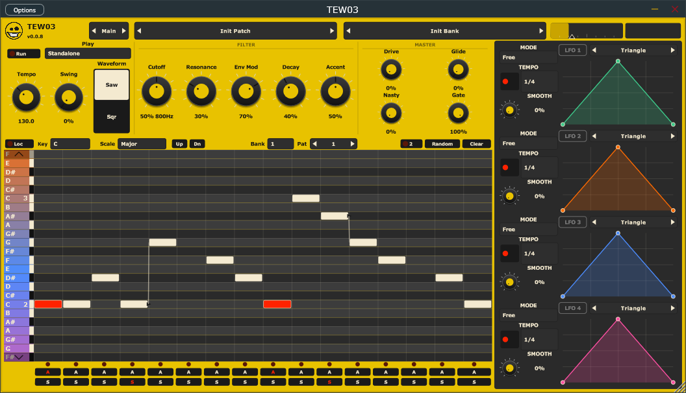

TEW03
A monophonic acid synth. Classic 303 squelch (saw/square, resonant filter, accent, slide, drive) plus a bit more bite than a straight clone.
A 3x12 step sequencer (16 or 32 steps, accent and slide, key lock), two drawn LFOs you drop on any knob, and a click-to-add FX rack that stays off until you turn it on.
Keyboard, Standalone, or Pattern mode. Patterns play the voice and go out as MIDI.
Effects are chorus, compressor, delay, distortion, EQ, filter, flanger, phaser, and reverb — click to add, drag to reorder. A five-band parametric EQ sits before and after the rack, with the spectrum behind the curve.
